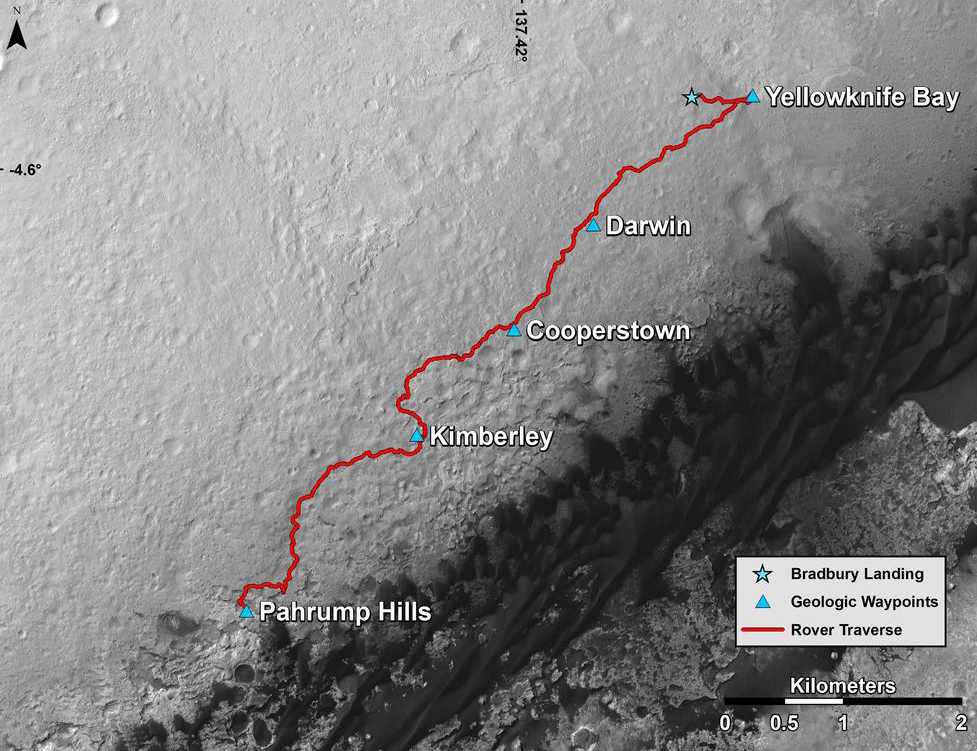
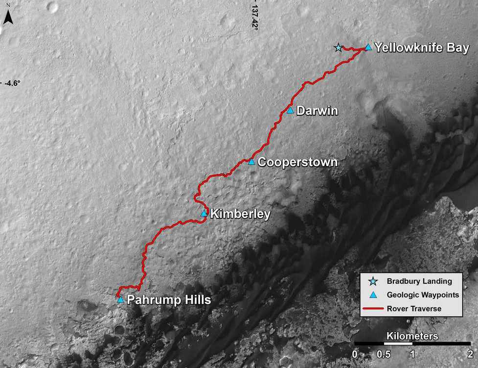
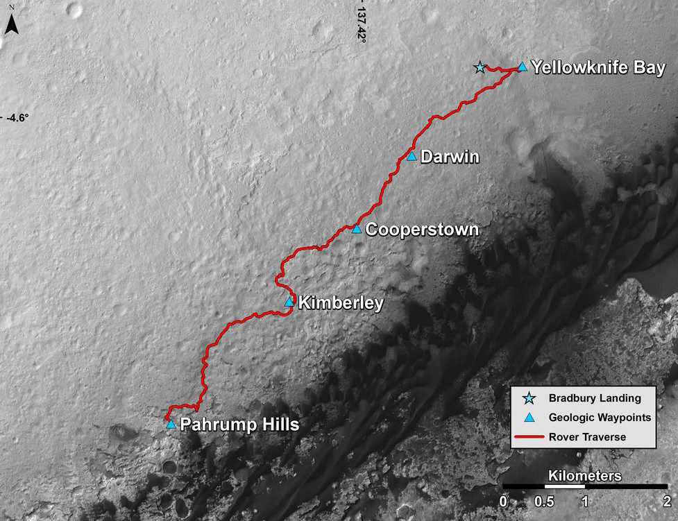

Tools that will be used
- https://api.nasa.gov/api.html#MarsPhotos
- http://www.w3schools.com/tags/tag_map.asp
- http://mars.nasa.gov/maps/explore-mars-map/fullscreen/
I've always loved space and everything about space, including the rockets, satellites, asteroids, everything. And a part of that is the Mars Curiosity rover. I wanted to create a visually engaging website that will educate its viewers on the location of Curiosity as well as the pictures it took on mars depending on the location.
Users will be able to click on five milestones of Curiosity's adventure marked on the map that contains the path that curiosity has been on since landing. Each of these milestones will call the NASA MARS Rover API to obtain the pictures that curiosity took on that sol/location.
